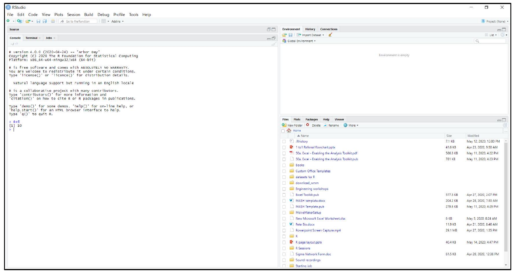
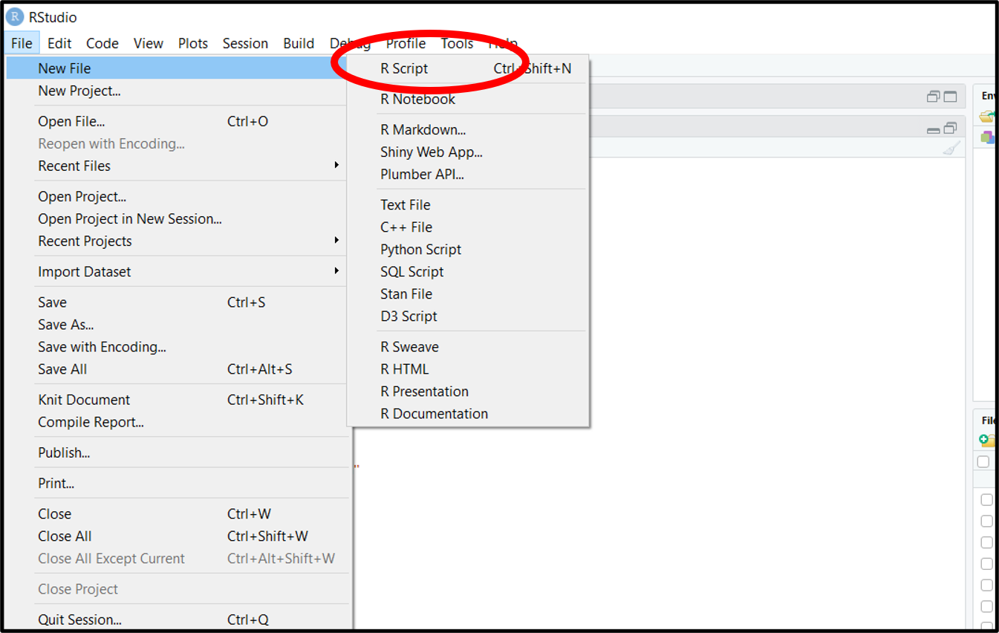
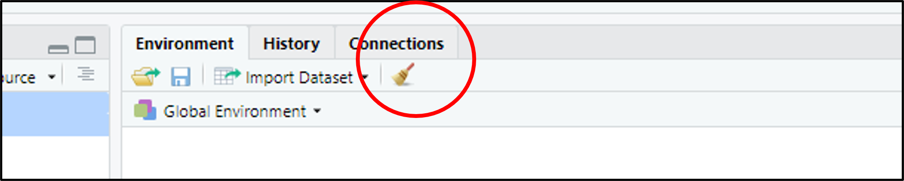

4 First interactions with R and RStudio
4.1 Opening R
If you open the R software you will get a window in which you can type code. This is the Console (more on this later). It is possible to do all your coding in this Console but RStudio is much more friendly to use. Because of its ease of use, once you’ve used RStudio, you will probably find you never open R again! All of the materials in this book use RStudio for this reason.
4.2 Opening RStudio
When you open RStudio, you will probably see several different sections or panes.
The exact arrangement can vary depending on your version and settings.
A common layout contains four main panes:
- (Top-left) Source
- (Bottom-left) Console
- (Top-right) Environment / History
- (Bottom-left) Files / Plots / Packages / Help

4.3 1. Source
The Source pane is where you can write, edit and save your code. If it is the first time opening Rstudio, the Source pane may not appear until you click the following.
File > New File > R Script
The Source pane is where you should normally develop your analysis. The saved code is referred to as a script and has the file extension .R. These files can be reopened and worked on at any time.

4.4 2. Console
The Console is where R receives and executes commands. This is the same Console as in the standalone R program discussed at the beginning of this section.
You can type directly into it. The result will appear underneath. Unlike an R script, the Console is temporary and anything you type into it is not saved. The Console is particularly useful for:
- Trying out commands
- Testing ideas
- Checking the result of a function
- Troubleshooting
👍 Tip: You can press the Up key with your cursor in the Console to quickly cycle through commands you have typed recently.
4.5 3. Environment / History
The Environment pane shows objects that currently exist in your R session. Objects are bits of information R can store and work with.
For example, if you run the code:
student_scores <- c(65, 72, 81, 69, 88)the object student_scores will appear in the Environment. We’ll talk more about objects later.
The Environment therefore gives you a useful overview of the objects you have created.
There are other tabs within this pane, the next most useful being the History tab which shows all the commands that you have previously entered.
This can be useful when you are trying to remember something you did earlier in your session.
4.6 4. Files / Plots / Packages / Help
The last window contains several tabs including Files, Plots, Packages and Help.
The Files tab allows you to navigate through folders on your computer.
Plots displays graphs that you create in R.
Packages allows you to see packages that are installed in your R session.
Help displays R’s documentation when you request it using the ? command (see Errors for further help).
The following table summarises the pane functions.
| Window | What it does |
|---|---|
| Source | Write and edit R scripts |
| Console | Run R commands |
| Environment | View objects currently stored in R |
| History | View previously entered commands |
| Files | Navigate through files and folders |
| Plots | View graphs |
| Packages | Install and manage packages |
| Help | Access R documentation |
4.7 Working directories
One concept that often causes confusion when you first start using R is the working directory.
The working directory is the folder that R is currently using as its default location for reading and writing files.
You can find your current working directory by running:
getwd()getwd() means get working directory.
You can change the working directory using setwd() and the path to your desired folder. For example:
setwd("C:/Users/YourName/Documents/R")The exact path will depend on your computer.
ℹ️ You do not necessarily need to use setwd(). Instead, in the Files tab, click … on the right-hand side, click through the file explorer to find the folder you want then click Open. Click the ⚙️ symbol titled More then Select Set as Working Directory.
4.8 Learning to write code
Now that you’ve covered the fundamentals of the RStudio interface, you are ready to begin writing you first bits of code.
👍 For the remainder of this book, when R code snippets are provided, have a go yourself at using them. You can copy them directly using the clipboard icon button in the top-right of the code block, but it is recommended that you type them from scratch. This may feel tedious, but it will help you in remembering commonly used code.
4.8.1 What is a command?
A command is an instruction that you give to R.
To run a command in the Console you simply type your command and press Enter.
To run a command in the Source pane (script) there are two ways:
Highlight the line(s) of code and press Ctrl + Enter on your keyboard or the Run key in the top right of the Source pane.
Put your cursor on the line of code and press Ctrl + Enter. This also moves the cursor to the next line so you can easily run the next line.
👍 To quickly highlight your entire script click Ctrl + A with your cursor anywhere in the script.
An example command is:
2 + 2an instruction asking R to add two numbers.
Another example is:
even_numbers <- c(2, 4, 6, 8)This tells R to create an object named even_numbers by combing the numbers 2,4,6 and 8. Note here, that in programming we call this a vector. Vectors are formed in R using the function c() where c stands for combine.
You will quickly become familiar with the basic structure of R commands.
If you’d like to carry out other calculations, here are the ways you must enter them into RStudio for some simple operations.
| Arithmetic Operation | R Code |
|---|---|
| \(4+6\) | 4+6 |
| \(6-4\) | 6-4 |
| \(4 \times 6\) | 4*6 |
| \(4 \div 6\) | 4/6 |
| \(4^{6}\) | 4^6 |
| \(\mathrm{e}^{4}\) | exp(4) |
| \(\log_{10} (4)\) | log10(4) |
| \(\ln(4)\) | ln(4) |
4.8.2 What is a function?
A function is a piece of code designed to perform a particular task.
Functions are one of the most important concepts in R.
For example:
gives the following output.
#> [1] 5Here:
-
meanis the function; -
c(2, 4, 6, 8)is the input; - the function calculates the mean.
ℹ️ Actually, c() is also a function in itself. The c stands for combine, so in th above example, we are combining 2,4,6,8.
Functions are generally followed by parentheses:
function_name()The information that you give to a function is called an argument.
For example:
round(3.14159, digits = 2)
#> [1] 3.14Here:
-
round()is the function; -
3.14159is the value being rounded; -
digits = 2tells R how many decimal places to use.
4.8.3 Objects
Objects are another fundamental idea in R.
An object is something that R can store and work with.
For example:
age <- 21Here we have created an object called age.
We can then ask R to show us its value:
age
#> [1] 21We can also use it in another calculation:
age + 1
#> [1] 224.8.4 Assignment
The <- symbol is commonly used to assign a value to an object.
For example:
my_number <- 10This means store the value 10 in an object called my_number.
Objects can contain different types of information. They do not have to contain just single numbers.
For example, an object can contain text:
student_name <- "Alex"Or several numbers:
test_scores <- c(65, 72, 81, 69, 88)For now, the important thing is simply to understand that R allows you to store information in objects and then use those objects later.
If you want to display a list of all the objects currently saved in the Environment, you can use the code ls().
You can remove an object from the environment by typing rm()with the name of the object in the brackets.
For example rm(test_scores) will remove the variable named *test_scores from the environment.
You can delete all objects from the environment by clicking the broom icon in the top ribbon of the Environment window:

Alternatively, you can type the following command in the console rm(list=ls())
4.8.5 Naming objects
It is a good idea to give objects sensible names. When naming objects, best practices are to:
- Be informative about that the object represents
- Do not use spaces
- If it has multiple words in the name, separate these by underscores or capitalise each word.
- Do not include dots or other symbols
Good examples are:
age <- 21
average_score <- 75
TestScores <- c(65, 72, 81, 69, 88)Compared with bad names:
The last two objects average score and TEST.SCORES! are so bad that they will give you the following error!
#> Error in parse(text = input): <text>:1:9: unexpected symbol
#> 1: average score
#> ^4.9 Exercise
- In the Console, create an object called
yand give it the value \(15\).
- Create another object called
zand give it the value \(5\).
- Calculate
ydivided byz.
- Clear the environment and repeat the above by writing a script to do all three stages and running it.
- Change the value of
yin your script to \(20\) and run it again.
4.8.6 Comments
You can add comments to your R code using the
#symbol.Anything after
#on that line will be treated as a comment rather than R code and wont be executed when you run that line or script.For example:
Comments are useful for explaining what your code is doing.
You can also use comments to organise a script:
👍 Good habit
Write comments that help you — and someone else — understand what your code is doing.
Keeping your code organised. As your R scripts become longer, organisation becomes increasingly important.
You can use comments and headings to divide your code into sections.
For example:
This makes your script much easier to read.